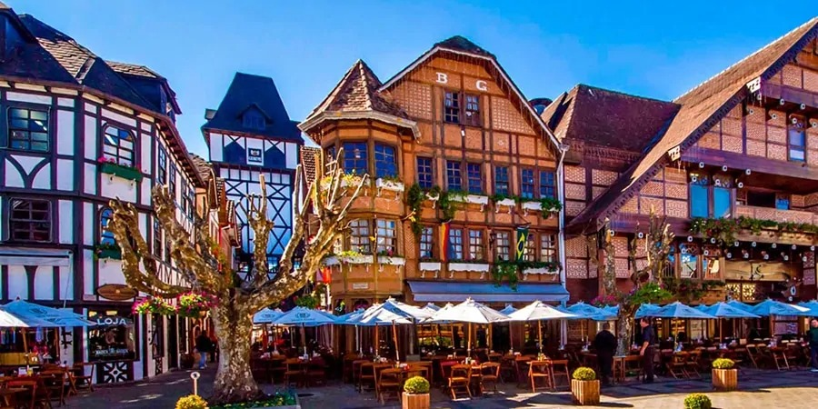
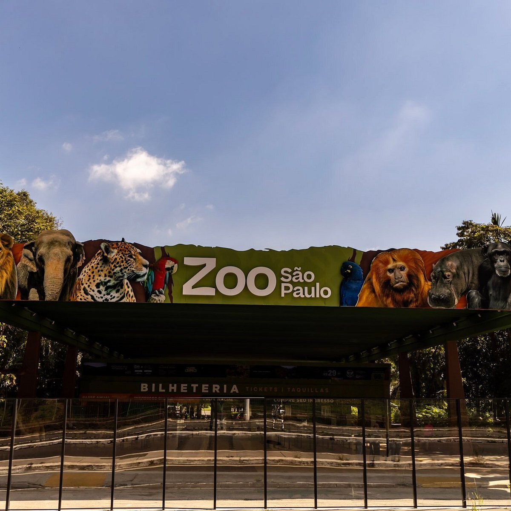

Lugares que eu quero conhecer
Lugares que eu conheci
-

Campos do Jordão
-

Zoológico de São Paulo
-
Itu
Curiosidades
- Eu gosto muito de tênis de mesa
- Eu toco violão há bastante tempo
- Já fui vice-campeão do Troféu Brasil de judô
- Eu não sabia nada de tecnologia antes da Germinare
- Minha linguagem de programação preferida é Java